| If | r ≥ 1 | r ≥ 3/2 | r ≥ √3 | r ≥ 2 |
| n=3 | 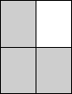 | 
| ||
| then | m3(r) = 2 | m3(r) = 3/r | m3(r) = r | m3(r) = 2 |
What are the values of mn(r) for non-square values of n? A much harder question is to find Mn(r), the smallest value of m so that so that an m x mr rectangle contains n non-overlapping 1 x r rectangles that might be tilted. For example, when r > 1.9762, M2(r) < m2(r):
What are the values of Mn(r) for small values of n?
Here are the piecewise definitions for mn(r) for small n:
| If | r ≥ 1 | r ≥ √2 | r ≥ 2 |
| n=2 | 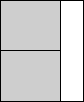 | ||
| then | m2(r) = 2/r | m2(r) = r | m2(r) = 2 |
| If | r ≥ 1 | r ≥ 3/2 | r ≥ √3 | r ≥ 2 |
| n=3 | 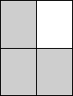 |
| ||
| then | m3(r) = 2 | m3(r) = 3/r | m3(r) = r | m3(r) = 2 |
| If | r ≥ 1 | r ≥ (√13-1)/2 | r ≥ (√5+1)/2 | r ≥ 2 | r ≥ √5 | r ≥ 3 |
| n=5 | 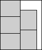 | 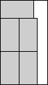 | ||||
| then | m5(r) = 3/r | m5(r) = r + 1 | m5(r) = 2 + 1/r | m5(r) = 5/r | m5(r) = r | m5(r) = 3 |
| If | r ≥ 1 | r ≥ √(3/2) | r ≥ (√3+1)/2 | r ≥ 3/2 | r ≥ (√17-1)/2 | r ≥ 2 | r ≥ √6 | r ≥ 3 |
| n=6 | 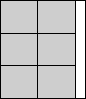 | 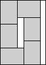 | 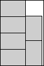 | 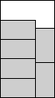 | 
| |||
| then | m6(r) = 3/r | m6(r) = 2r | m6(r) = 2 + 1/r | m6(r) = 4/r | m6(r) = r + 1 | m6(r) = 6/r | m6(r) = r | m6(r) = 3 |
| If | r ≥ 1 | r ≥ 4/3 | r ≥ √2 | r ≥ 3/2 | r ≥ √3 | r ≥ 2 | r ≥ 7/3 | r ≥ √7 | r ≥ 3 |
| n=7 | 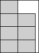 | 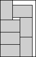 | 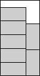 | 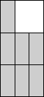 | |||||
| then | m7(r) = 3 | m7(r) = 4/r | m7(r) = 2r | m7(r) = 1 + 3/r | m7(r) = r + 1 | m7(r) = 3 | m7(r) = 7/r | m7(r) = r | m7(r) = 3 |
| If | r ≥ 1 | r ≥ 4/3 | r ≥ √2 | r ≥ 3/2 | r ≥ 8/3 | r ≥ √8 | r ≥ 3 |
| n=8 | |||||||
| then | m8(r) = 3 | m8(r) = 4/r | m8(r) = 2r | m8(r) = 3 | m8(r) = 8/r | m8(r) = r | m8(r) = 3 |
| If | r ≥ 1 | r ≥ √5-1 | r ≥ √2 | r ≥ 3/2 | r ≥ √(5/2) | r ≥ (√17+3)/4 |
| n=10 | 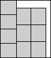 | 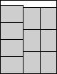 | 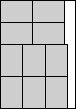 | 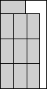 | ||
| m10(r) = 4/r | m10(r) = 2 + r | m10(r) = 2 + 2/r | m10(r) = 5/r | m10(r) = 2r | m10(r) = 3 + 1/r | |
| r ≥ 2 | r ≥ (√13+1)/2 | r ≥ 1+√2 | r ≥ 3 | r ≥ √10 | r ≥ 4 | |
| 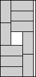 | 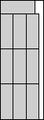 | |||||
| then | m10(r) = 2 + 3/r | m10(r) = 1 + r | m10(r) = 3 + 1/r | m10(r) = 10/r | m10(r) = r | m10(r) = 4 |
If you can extend any of these results, please e-mail me. Click here to go back to Math Magic. Last updated 6/7/04.